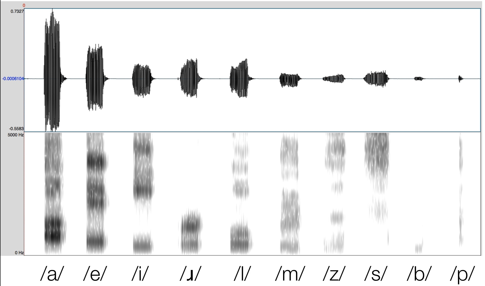

### A Mysterious Epenthesis --- # Sonority ### Will Styler - LIGN 111 --- ### We've already talked about Syllables  --- ### We've seen lots of restrictions on what can go inside them - "No complex codas" - "CVC only" - "Only certain codas" - "CV, damnit!" --- ### Today, we'll talk about one last kind of restriction --- ### Why is [kɹ] a legal onset in English, but *[ɹk] isn’t? - Why [pl], but not [lp]? - [sl], but not [ls]? - [sn], but not [ns]? --- ### There's more to this than just "CVC" --- # Sonority --- ## Sonority Hierarchy A language-specific ranking of sounds which determines the legality of onsets and codas --- ### Syllables have an expected sonority pattern  --- ## The more sonorous a segment, the closer it should live to the nucleus! --- ### Languages Rank Segments in terms of their sonority In English... - Glides > /r/ > /l/ > Nasals > Voiced Fricatives > Voiced Stops/Voiceless Fricatives > Voiceless Stops --- ### So, we can look at the hierarchy to determine syllable legality! --- ### Cat  --- ### Smell  --- ### Malt  --- ### Plump  --- ### Creams  --- ### ... but ... --- ### Msell  --- ### Matl  --- ### Lpupm  --- ### Rceasm  --- ### Phonetics? In my phonology?  --- ### Mind you, there's more to life than Sonority --- ### Kmalp  --- ### Sticks  --- ### Final coronal obstruents are special in English - [s d t θ z] can combine with prior stops or fricatives - ... and can be the third element in the coda ---  --- ### The Appendix - This issue has led some to propose an additional element of the syllable, the 'appendix' - Not part of the onset, coda, or rhyme, but attaches directly to the syllable node ---  --- ### ... but that's beside the point! - (and beside the syllable :D) --- ### Sonority is useful! - It helps explain some odd patterns - It lets us cope when CCV is *sometimes* OK - It gives us the tools we need for our dataset --- <huge>Go Forth and Sonorize</huge>